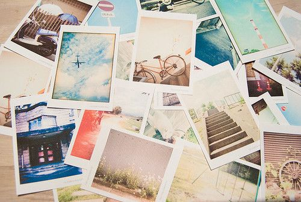

Cooking
I love experimenting with flavors and creating new dishes. Cooking is both an art and a science for me.
Through my small business, Tattou Flavors, I share unique culinary creations. Check out my Instagram for more.

Photography
I love capturing moments as souvenirs. Photography allows me to relive special experiences.
Listening to Music
Music fuels my creativity and brings me comfort. It’s my companion in both work and relaxation.